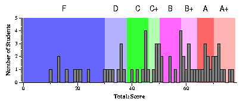

Jim Plank
Files
General Comments
None really -- this was a typical exam in terms of difficulty.
I suggest that you go over all of the files above. In particular, if
you missed any points on a question, you should look at the
correct answer.
Look at the histogram files above, and the plots below to get a sense
of how you did in comparison to the rest of the class.
Assigning Grades
In assigning grades, I first like to set the basic competence level.
I expected everyone to be able to do the following:
- Get three points on question 1.
- Get two points each for questions 2 and 3.
- Get one point for question 4.
- Get two points each on question 5-7.
- Get two points each on questions 8-13.
- Get at least 15 points on question 14. That's 8 points for the structure,
plus 7 random points on the other things.
- Get two points on question 15, and 7 points total on 16-19.
That makes 50, which will be set as the B level.
With that in mind, here are the letter grades that I would assign to the test
scores:
- 70 to 78: A+
- 64 to 70: A
- 58 to 64: B+
- 50 to 58: B
- 46 to 50: C+
- 38 to 46: C
- 30 to 38: D
- Under 30: F
General Data
Exam Score Histogram
